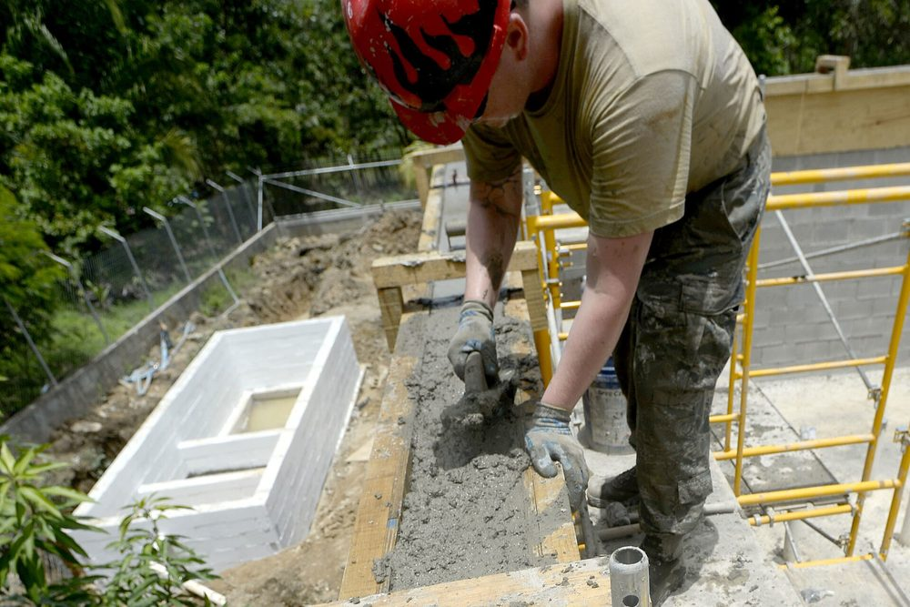
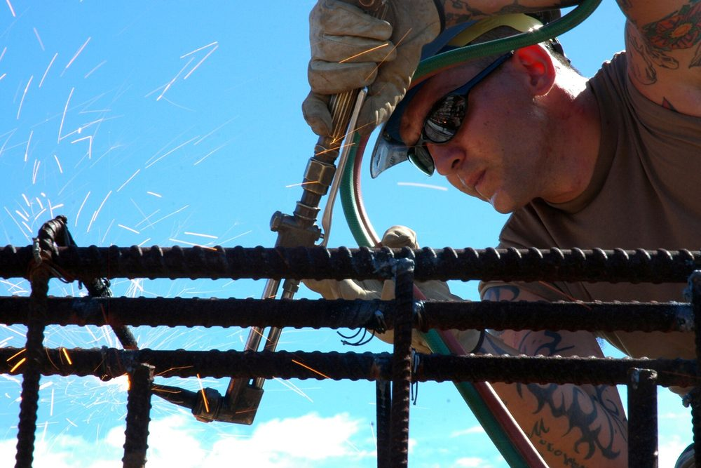

Pourquoi une maison en maçonnerie a besoin de chaînages
Un mur en blocs ou en briques résiste bien à la compression : il porte le poids du plancher et de la toiture sans difficulté. En revanche, il supporte mal la traction et la flexion, c'est-à-dire les efforts qui apparaissent quand le sol tasse de façon inégale, quand le vent pousse sur une façade ou quand la terre tremble. Sans armature, la maçonnerie se fissure, puis les panneaux de mur se désolidarisent.
Les chaînages sont des éléments en béton armé intégrés à la maçonnerie qui rendent à l'ensemble ce qui lui manque : une capacité à travailler en traction et à rester solidaire. Ils transforment une juxtaposition de murs en une construction qui se comporte comme un ensemble. On parle de chaînage horizontal quand l'élément court le long du mur, et de chaînage vertical quand il monte dans l'épaisseur du mur.
L'idée à retenir : un chaînage ne sert pas à porter la maison, il sert à la tenir ensemble. C'est ce qui limite l'ouverture des fissures et évite qu'un mur parte seul vers l'extérieur.
Le chaînage horizontal : la ceinture de chaque niveau
Le chaînage horizontal, parfois appelé ceinture ou sablière en béton, est une poutre armée coulée dans l'épaisseur du mur. On le place au niveau de chaque plancher et en tête des murs sous la toiture. Il a trois fonctions principales : reprendre les efforts de traction, répartir les charges concentrées qui arrivent d'une poutre ou d'une charpente, et maintenir les murs en position face aux poussées horizontales.
Pour qu'il joue ce rôle, il doit former une boucle fermée : un chaînage qui s'interrompt, même sur un court tronçon, perd l'essentiel de son efficacité. Il est constitué d'aciers longitudinaux à haute adhérence (les armatures HA, nervurées pour accrocher le béton) maintenus par des cadres, dont l'enrobage doit rester suffisant pour protéger l'acier de la corrosion.

Le chaînage vertical : relier les niveaux et encadrer les ouvertures
Le chaînage vertical est un poteau en béton armé noyé dans la maçonnerie. On le trouve aux angles du bâtiment, à la rencontre de deux murs et de part et d'autre des grandes ouvertures, où il prend le nom de jambage. Il remplit deux missions : relier les chaînages horizontaux des différents niveaux entre eux, et raidir les bords libres des murs, là où la maçonnerie est la plus vulnérable.
Autour d'une porte ou d'une fenêtre, les jambages et le linteau forment un cadre rigide. C'est ce cadre qui évite la fissure en diagonale que l'on voit souvent partir d'un angle d'ouverture. Le même principe s'applique quand on ouvre un mur porteur : l'ouverture ne se réalise jamais sans reconstituer ce cadre.
| Élément | Où le trouve-t-on ? | Rôle principal | Point de vigilance |
|---|---|---|---|
| Chaînage horizontal bas | Sur les fondations, en pied de mur | Répartir les charges et lier les murs entre eux | Continuité avec les fondations et le soubassement |
| Chaînage horizontal d'étage | Au niveau de chaque plancher | Ceinturer le bâtiment et reprendre la traction | Boucle fermée, sans interruption |
| Chaînage horizontal haut | En tête des murs, sous la toiture | Reprendre la poussée de la charpente | Ancrage de la charpente dans le chaînage |
| Chaînage vertical d'angle | Angles et intersections de murs | Relier les niveaux et raidir les extrémités | Recouvrement des aciers d'un niveau à l'autre |
| Jambage | De part et d'autre des ouvertures | Encadrer l'ouverture avec le linteau | Ancrage en haut et en bas du jambage |
La continuité des aciers compte plus que la section
On imagine volontiers qu'un chaînage « plus gros » est plus sûr. En réalité, ce qui fait la différence, c'est la continuité des armatures. Un acier ne transmet un effort que s'il est correctement ancré dans le béton, ce qui impose des longueurs de recouvrement lorsque deux barres se rejoignent, et des retours d'angle bien conçus pour que la ceinture reste continue dans les coins.
Dans la pratique, les défauts de continuité se rencontrent surtout aux endroits où la maçonnerie est compliquée : angles, croisements de murs, abouts de plancher, passages de gaines. Ce sont aussi les endroits que les plans doivent détailler, car l'ouvrier ne peut pas improviser la bonne disposition au moment de couler. Les erreurs de ferraillage les plus fréquentes se concentrent d'ailleurs sur ces zones.
Conseil de chantier : avant le coulage, faites vérifier que les aciers des chaînages se recouvrent bien à chaque jonction, que les cadres sont en place et que l'enrobage est respecté. C'est un contrôle de dix minutes qui évite des reprises coûteuses.
Sol argileux et séisme : des chaînages encore plus sollicités
Deux situations demandent des chaînages particulièrement soignés. La première est le sol argileux : lorsque l'argile gonfle ou se rétracte avec l'humidité, le terrain bouge de façon inégale sous la maison. Des chaînages continus aident la construction à suivre ces mouvements d'un seul bloc plutôt que de se fissurer par morceaux. Ce point est détaillé dans notre article sur le retrait-gonflement des sols argileux, et il se combine avec un bon choix de fondations superficielles.
La seconde situation est la zone sismique. Lors d'un séisme, les murs sont sollicités dans leur plan comme perpendiculairement à leur plan, et ce sont les chaînages qui les maintiennent ensemble. Pour les maisons individuelles, les dispositions constructives relèvent de l'Eurocode 8 ou des guides CPMI-EC8 en vigueur, selon la zone de sismicité du terrain. Vous trouverez le zonage dans notre article sur les zones sismiques en France.

Les erreurs fréquentes à éviter
- Un chaînage interrompu : un passage de gaine ou une trémie coupe la ceinture sans que les aciers soient reconstitués autour.
- Des angles mal traités : sans retour d'armatures correct, la jonction entre deux chaînages horizontaux ne transmet pas les efforts.
- Des recouvrements insuffisants : deux barres qui se touchent sans longueur de recouvrement suffisante ne forment pas un acier continu.
- Un enrobage trop faible : l'acier proche du parement se corrode, en particulier en bord de mer, et le béton éclate.
- Des chaînages absents autour des ouvertures : c'est la cause classique des fissures en diagonale qui partent des angles de fenêtre. Pour reconnaître ce type de désordre, consultez notre article sur les fissures dans un bâtiment.
Ce que fait MH Structure, et ce qui relève du chantier
MH Structure est un bureau d'études structure. Concrètement, nous dimensionnons les chaînages dans la note de calcul selon l'Eurocode 2, nous les positionnons sur les plans de coffrage et d'armatures et nous précisons leur section, leurs aciers et leurs dispositions aux angles et aux ouvertures.
La réalisation sur site (coffrage, mise en place des aciers, coulage) est assurée par l'entreprise de maçonnerie. Nous ne réalisons pas les travaux et ne faisons pas de maîtrise d'oeuvre d'exécution : les conseils de chantier donnés dans cet article sont des recommandations, pas des prestations de contrôle.
Vous préparez une construction ou une rénovation en maçonnerie ? Transmettez-nous vos plans pour obtenir une note de calcul et des plans de coffrage et d'armatures avec les chaînages détaillés. Devis gratuit sous 48h.
Questions fréquentes
Un chaînage est-il obligatoire dans une maison en maçonnerie ?
Dans une construction en maçonnerie porteuse, les chaînages sont un principe de base de la conception : ils sont prévus par les règles de l'Eurocode 6 (NF EN 1996-1-1) et par les documents techniques de mise en oeuvre. En zone sismique ou en sol argileux exposé au retrait-gonflement, les dispositions sont encore renforcées. Leur dimensionnement et leur position doivent figurer sur les plans de la structure.
Quelle est la différence entre un chaînage horizontal et un chaînage vertical ?
Le chaînage horizontal est une ceinture en béton armé qui court en tête de mur, au niveau de chaque plancher. Le chaînage vertical est un poteau en béton armé noyé dans la maçonnerie, placé aux angles, aux intersections de murs et de part et d'autre des grandes ouvertures. Ils fonctionnent ensemble : l'un ceinture, l'autre relie les niveaux entre eux.
Peut-on ajouter un chaînage sur une maison déjà construite ?
Dans certains cas, oui, mais cela relève d'un renforcement et non d'un simple ajout. Il faut d'abord comprendre l'état de la structure existante, puis étudier une solution adaptée. Un diagnostic structurel permet de décider si un chaînage rapporté est utile et comment le raccorder à l'existant.
MH Structure réalise-t-il la pose des chaînages ?
Non. MH Structure est un bureau d'études structure : nous dimensionnons les chaînages, les positionnons sur les plans de coffrage et d'armatures et rédigeons la note de calcul. La réalisation du coffrage, du ferraillage et du coulage relève de l'entreprise de maçonnerie.